12:00 出發
內壢交流道
Google 導航第一站直接設「瑞芳美食廣場」
正常車程1 小時～1 小時 20 分
連假抓1 小時 30 分～2 小時，預計 13:30–14:00 抵達。14:00 前到不是硬目標。
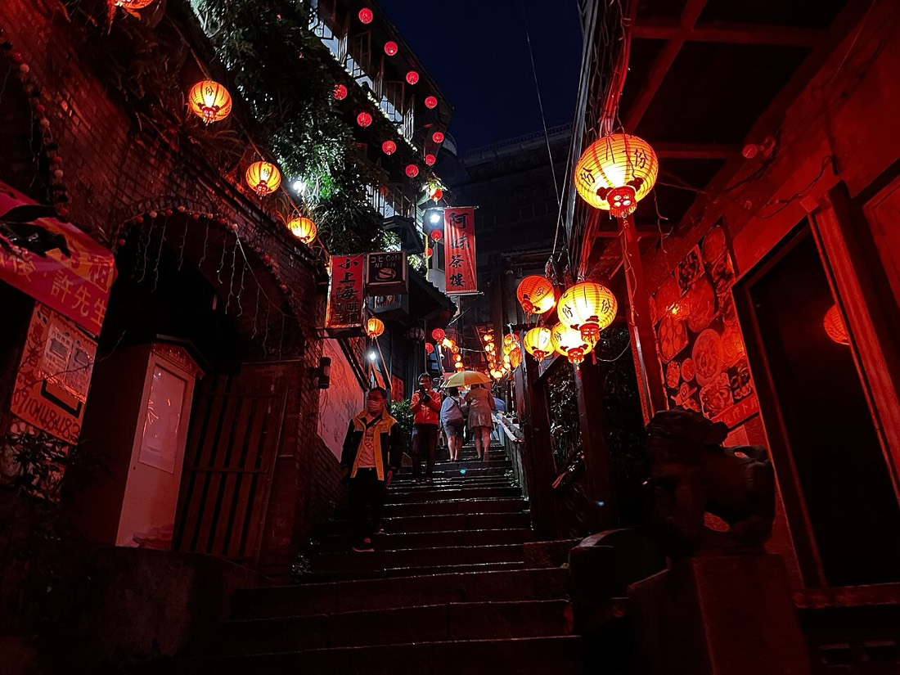
內壢出發，瑞芳、金瓜石、九份、基隆、金山一路吃回桃園。一家三口、一台小客車、一位六年級男生，照表操課版。
三個主景點當骨架：黃金博物館、海科館、朱銘美術館。中間穿插九份、基隆、金山的小吃。下雨不必整趟重排，照每站的「雨天版」砍景點就好。
別用平日 Google Maps 預估時間排行程。交通部預估車流明顯增加，本站所有車程都已抓寬 1.5 倍。
整趟最重要的一點。民宿到老街步行即可。假日官方會把車引導到新九號、水湳洞等外圍停車場轉接駁。
下雨照樣玩。10/10 國定假日照常開館，連假照常開館。
公開資料對假日／預約方式說法不一。出發前一天打 02-2434-2111 確認 10/11 可參觀。
朱銘＋金山鴨肉＋回桃園就夠了。大雨版：一太 → 朱銘室內 → 金山吃飯 → 回家，金山老街直接取消。
中午出發，一路向東北。午餐在瑞芳解決，下午進黃金博物館，傍晚走進九份老街。重點只有一個：停車採外圍停車＋接駁，不硬闖。
Google 導航第一站直接設「瑞芳美食廣場」
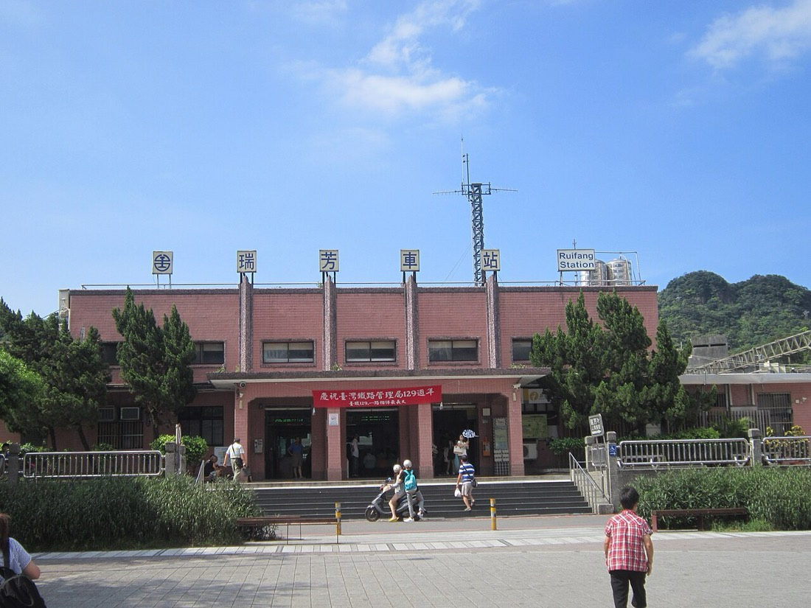
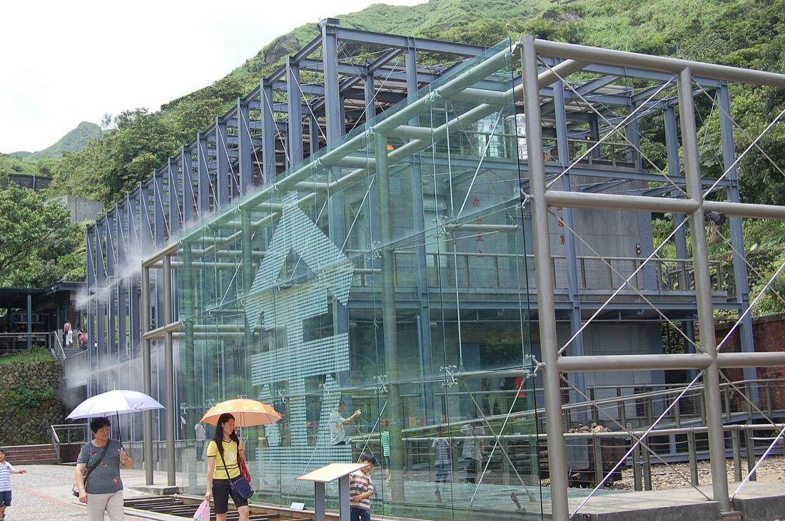
連假期間 09:30–18:00，10/9 不會提早關門 · Google 4.2
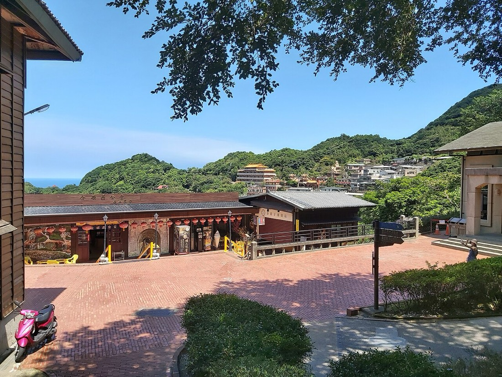
新北市瑞芳區汽車路35之1號 · 電話 0953-217-143 · Google 3.9
自駕路線：國道 1 號 → 八堵交流道 → 台 62 線 → 瑞芳交流道 → 台 2 丁線 → 縣道 102 線
| 停車場 | 收費 | 到老街 | 備註 |
|---|---|---|---|
| 隔頂停車場 | 平日計次 $150、假日 $50／時 | 步行 6 分 | 老街入口方向，首選 |
| 九份城隍廟停車場 | 平日 2 小時 $150、假日 2 小時 $250 | 步行 2 分 | 最近老街，假日貴 |
| 聖明宮停車場 | 計次 $200、過夜 $300 | 到阿柑姨 2 分 | 可過夜；沿途路窄難會車，對技術有信心再走 |
| 台陽停車場 | 單日計次 $200 | 步行 7 分，有樓梯 | 位置多、價格公道 |
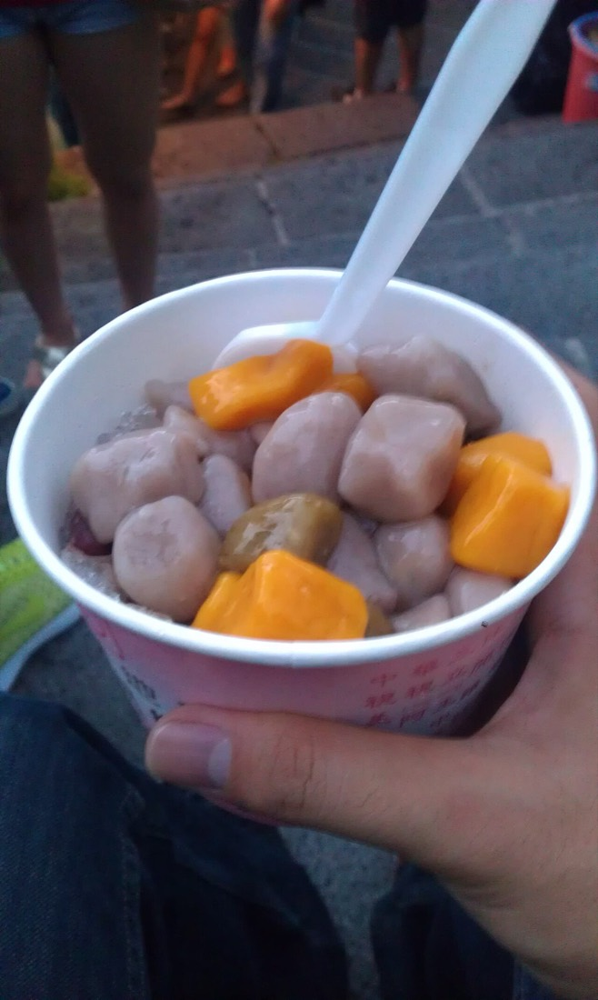
不要只吃一間，三個人分著吃四樣。
| 順序 | 必吃 | 預算 |
|---|---|---|
| 1 | 魚丸／魚丸湯 | $100–150 |
| 2 | 芋粿巧／草仔粿 | $50–100 |
| 3 | 滷味 | $150–250 |
| 4 | 19:00 阿柑姨芋圓（4.2）綜合芋圓 2 碗，不要三碗 | $150–200 |
上午整個給海科館，下午進基隆市區，飯店先休息再出門。晚上火鍋加廟口。這天下雨也不影響，主景點全在室內。
直接在九份解決，不要繞去外地早餐店
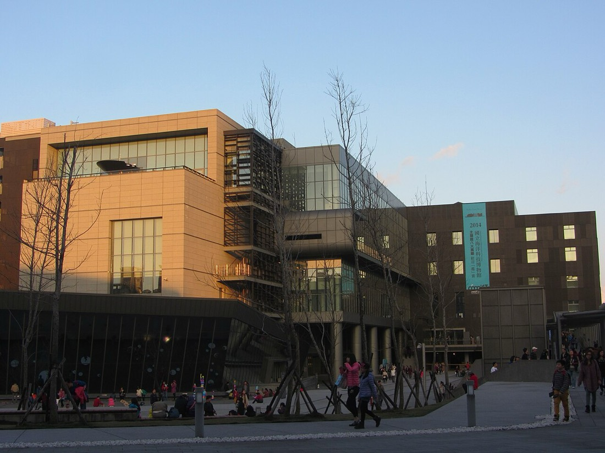
09:00–17:00 · 國定假日、連假照常開館 · Google 4.2
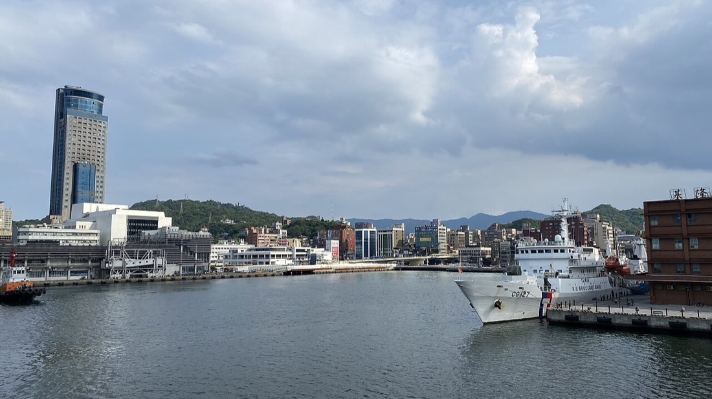
Google 3.2 · 這 40 分鐘休息強烈建議保留
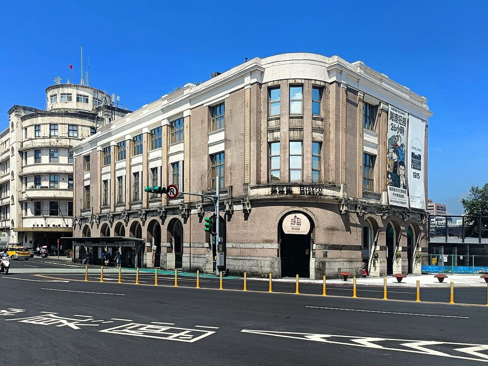
基隆市中正區信二路303號 · Google 4.3
| 點法（不要每人一鍋） | 預算 |
|---|---|
| 石頭火鍋 ×2 鍋 | $500–700 |
| 肉盤／海鮮 | $250–400 |
| 火鍋料 | $150–250 |
| 白飯／飲料 | $100 |
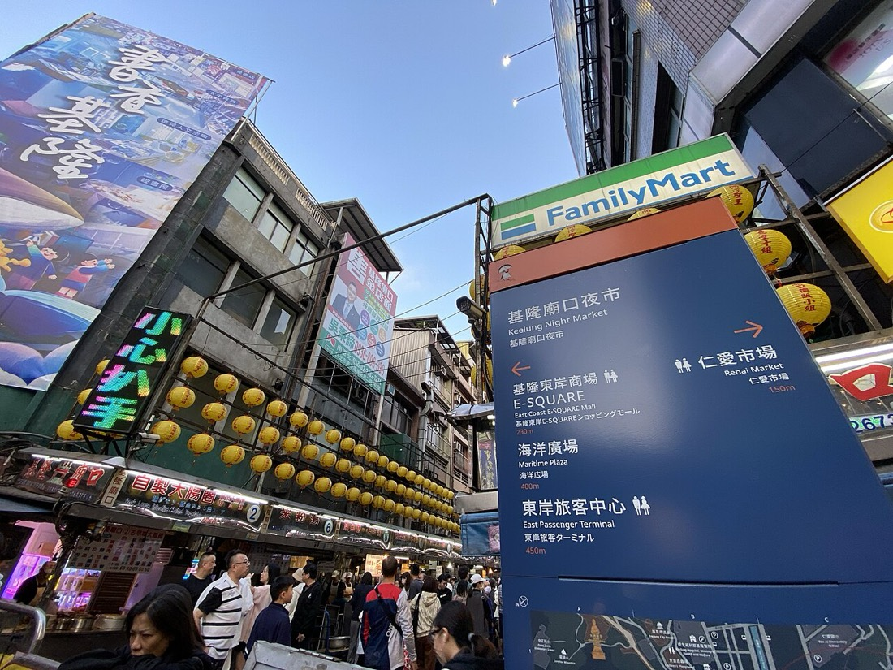
剛吃完火鍋，這裡不再吃正餐
早上一個免費觀光工廠暖身，中午前進朱銘美術館，金山吃鴨肉買地瓜，15:00 開始返程。不要把「16:30 一定到家」當目標。
住宿有附就直接吃，沒有就附近找早餐店
09:00–17:00 · 免費參觀 · Google 4.4
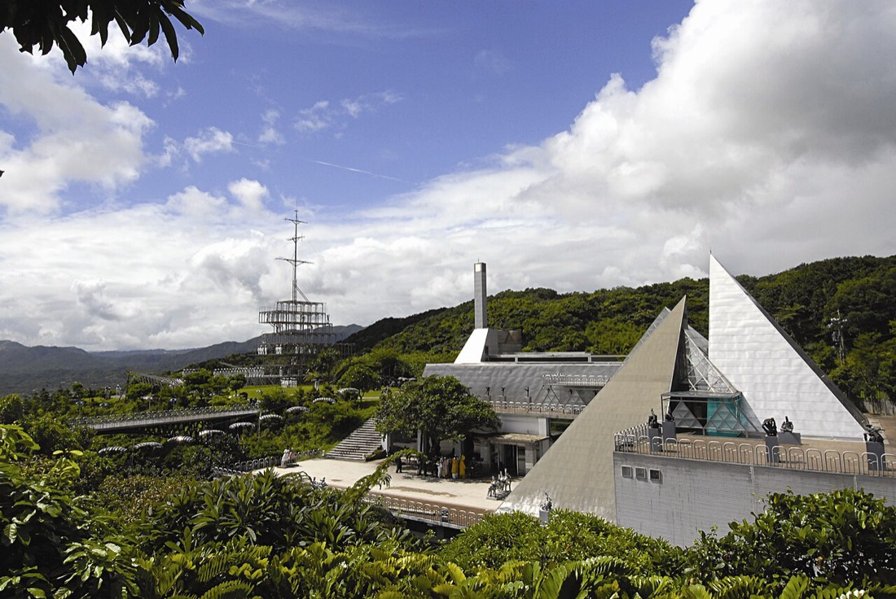
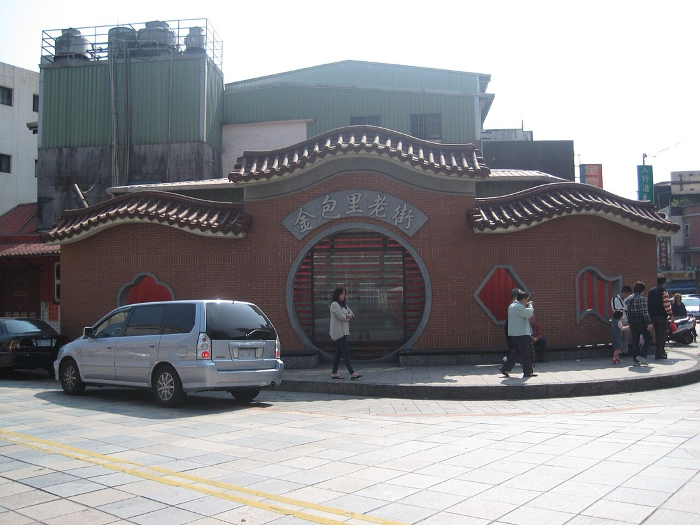
正常 1 小時～1 小時 20 分，連假返程抓 1.5–2 小時以上
以一般小客車、一位六年級學生、不含兩晚住宿估算。含住宿整趟建議抓 $11,000–14,000。
| 日期 | 餐次 | 建議預算 |
|---|---|---|
| 10/9 | 瑞芳午餐 | $500–700 |
| 10/9 | 九份晚餐小吃 | $500–700 |
| 10/9 | 阿柑姨芋圓 | $150–200 |
| 10/10 | 九份早餐 | $250–400 |
| 10/10 | 海科館午餐 | $500–700 |
| 10/10 | 義美石頭火鍋 | $900–1,200 |
| 10/10 | 廟口小吃 | $300–500 |
| 10/11 | 早餐 | $250–350 |
| 10/11 | 金包里鴨肉 | $700–1,000 |
| 10/11 | 金山甜點／伴手禮 | $200–400 |
| 餐費合計 | $4,250–6,150 | |
| 景點 | 爸爸 | 媽媽 | 六年級 | 小計 |
|---|---|---|---|---|
| 黃金博物館 | $80 | $80 | 免費* | $160 |
| 海科館 | $200–300 | $200–300 | $200–300 | $600–900 |
| 陽明海洋文化藝術館 | $150 | $150 | $100 | $400 |
| 一太e衛浴 | 免費 | 免費 | 免費 | $0 |
| 朱銘美術館 | $350 | $350 | $320 | $1,020 |
| 門票合計 | $2,180–2,480 | |||
*未滿 12 歲國民或國內在學學生憑證免費。海科館票價依選館而異，以區間估算。
| 項目 | 說明 | 預算 |
|---|---|---|
| 油資 | 約 250–320 km，12 km/L、汽油 $30–31/L 約 $650–830；連假塞車耗油多，直接抓 $1,000 | $1,000 |
| 停車 Day 1 | 瑞芳站前、勸濟堂或外圍停車場 | $100–250 |
| 停車 Day 2 | 海科館假日上限 $250／日 | $250 |
| 停車 Day 3 | 一太路邊、朱銘停車場 | $100–200 |
| 交通合計 | 約 $1,450–1,700 | |
勾選狀態只存在這支手機的瀏覽器。
| 項目 | 評分 |
|---|---|
| 雨天適應度 | ★★★★★ |
| 六年級男生 | ★★★★½ |
| 美食 | ★★★★★ |
| 開車方便度 | ★★★★☆ |
| 國慶連假適合度 | ★★★★☆ |
| 行程會不會太累 | ★★★★☆ |
| 親子回憶 | ★★★★★ |